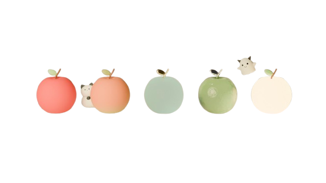
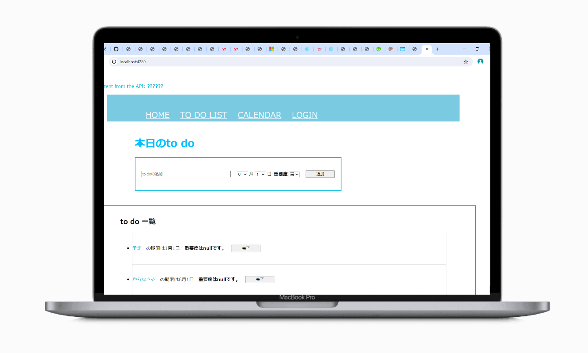
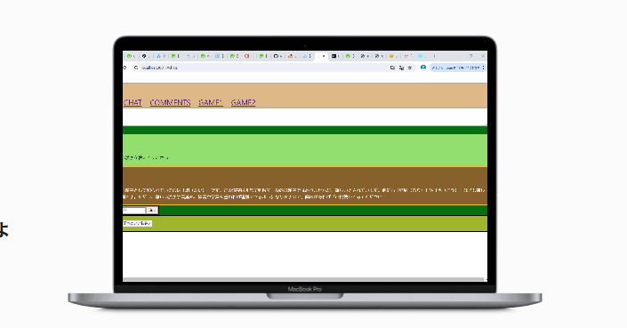
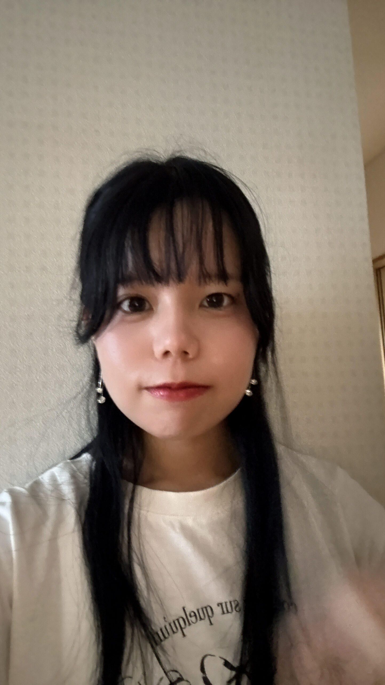

- BabaKanon's Products -
2025.09
Certificate

2025.03
Mobile App

2024.06
Web App

2024.05
Web App

Name: 馬場華乃音
University: 近畿大学
Club: TABIPPO, センティア, Finding AI, 情報リテラシー研究会
近畿大学で情報工学を学び、主にAI・機械学習分野に興味を持っています。
現在は、深層学習や統計・データ分析の基礎を学びながら、個人開発としてアプリケーション制作やアルゴリズムの実装に取り組んでいます。
このポートフォリオでは、制作物・研究の取り組み・学習記録を中心に掲載しています。
つくりながら学び、学びながらつくる
Thank you for your time and interest!
| GitHub | DIGIT-KITAQ-Flutter/team_kindai-university |
|---|---|
| 背景 | DigItKITAQのハッカソンで制作 キタクルを通して北九州の魅力を伝える |
| 制作人数 | 5名 |
| 担当箇所 | 投稿画面のUI |
| 発表プロダクト | 2025/3/16 DigItKITAQ |
| 制作期間 | 2025/3/3〜2025/3/16 |
技術学習・勉強会（オンライン）：ITスキルの基礎〜実践をオンラインで学ぶ勉強会がある
アイデアソン（対面）：テーマに沿ってチームでアイデアを出し合い、アプリの設計を行うイベント
ハッカソン（対面）：チームでアプリを制作し、現役エンジニアのメンタリングを受けながら開発する
成果発表会・交流会：完成したアプリをプレゼンテーション形式で発表し、企業の担当者とも交流できます。優秀作品は表彰される
今回の経験を通して、チームワーク、時間配分、そして発表準備の重要性を学んだ。制作に集中するあまり、これらは軽視されがちであるが、どれほど完成度の高い作品であっても、その価値が他者に伝わらなければ意味がないと感じた。